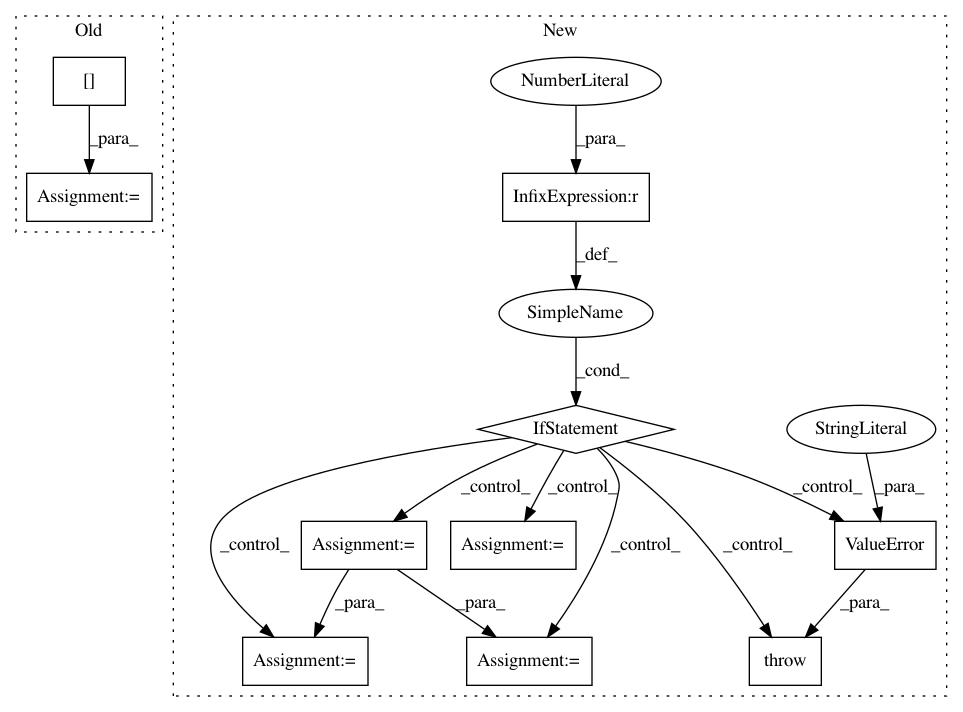

52424aae5e284440efdb4aea30266a69553d1dde,umap/umap_.py,UMAP,transform,#UMAP#Any#,1665
Before Change
indices = np.argsort(dmat)
dists = np.sort(dmat) // TODO: more efficient approach
indices = indices[:, : self.n_neighbors]
dists = dists[:, : self.n_neighbors]
else:
init = initialise_search(
self._rp_forest,
self._raw_data,
After Change
Embedding of the new data in low-dimensional space.
// If we fit just a single instance then error
if self.embedding_.shape[0] == 1:
raise ValueError("Transform unavailable when model was fit with"
"only a single data sample.")
// If we just have the original input then short circuit things
X = check_array(X, dtype=np.float32, accept_sparse="csr")
x_hash = joblib.hash(X)
if x_hash == self._input_hash:
return self.embedding_
if self._sparse_data:
raise ValueError("Transform not available for sparse input.")
elif self.metric == "precomputed":
raise ValueError("Transform of new data not available for "
"precomputed metric.")
X = check_array(X, dtype=np.float32, order="C")
random_state = check_random_state(self.transform_seed)
rng_state = random_state.randint(INT32_MIN, INT32_MAX, 3).astype(np.int64)
if self._small_data:
dmat = pairwise_distances(
X, self._raw_data, metric=self.metric, **self._metric_kwds
)
indices = np.argpartition(dmat,
self._n_neighbors)[:, :self._n_neighbors]
dmat_shortened = submatrix(dmat, indices, self._n_neighbors)
indices_sorted = np.argsort(dmat_shortened)
indices = submatrix(indices, indices_sorted, self._n_neighbors)
dists = submatrix(dmat_shortened, indices_sorted,
self._n_neighbors)
else:
init = initialise_search(
self._rp_forest,
self._raw_data,
X,
int(self._n_neighbors * self.transform_queue_size),
self._random_init,
self._tree_init,
rng_state,
)
result = self._search(
self._raw_data,
self._search_graph.indptr,
self._search_graph.indices,
init,
X,
)
indices, dists = deheap_sort(result)
indices = indices[:, : self._n_neighbors]
dists = dists[:, : self._n_neighbors]
adjusted_local_connectivity = max(0, self.local_connectivity - 1.0)
sigmas, rhos = smooth_knn_dist(
dists, self._n_neighbors, local_connectivity=adjusted_local_connectivity
)
In pattern: SUPERPATTERN
Frequency: 3
Non-data size: 10
Instances
Project Name: lmcinnes/umap
Commit Name: 52424aae5e284440efdb4aea30266a69553d1dde
Time: 2018-09-29
Author: joseph.m.courtney@gmail.com
File Name: umap/umap_.py
Class Name: UMAP
Method Name: transform
Project Name: stellargraph/stellargraph
Commit Name: 145170ca9bbd89aa01d8a40841e3c039d3683af8
Time: 2019-06-03
Author: andrew.docherty@data61.csiro.au
File Name: stellargraph/layer/graph_attention.py
Class Name: GraphAttention
Method Name: call
Project Name: stellargraph/stellargraph
Commit Name: 59266e34e076ed25852bccf5ce13025b5408406f
Time: 2019-05-28
Author: andrew.docherty@data61.csiro.au
File Name: stellargraph/layer/gcn.py
Class Name: GCN
Method Name: __call__